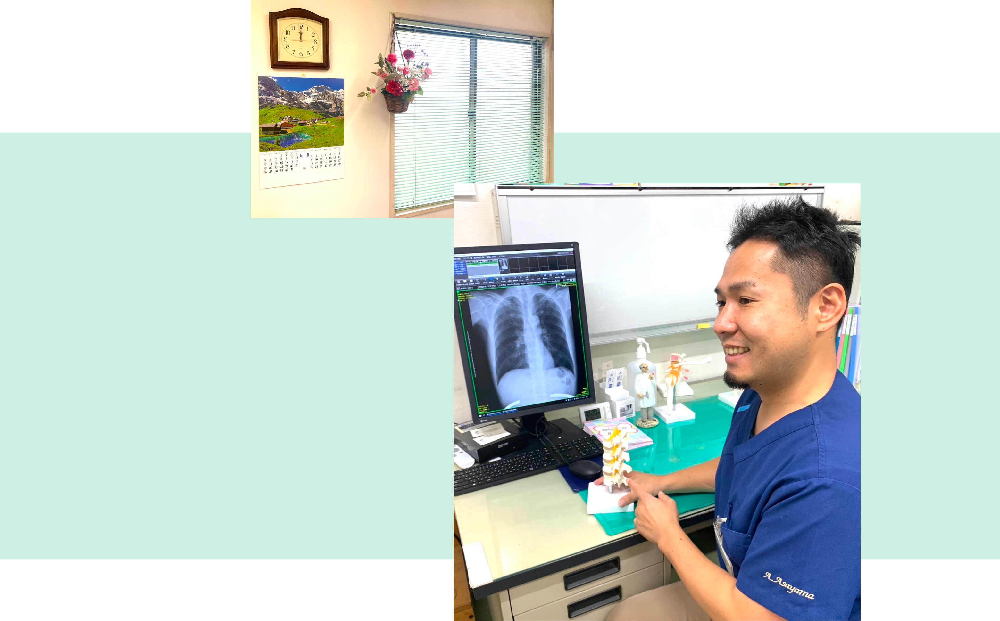

当院についてABOUT

健やかな日々をサポートする医療
信頼される ぬくもりのある病院
当院では患者様一人ひとりの想いに耳を傾け、健康への不安や悩みを和らげお一人でも多くの方の「健康寿命」を伸ばす事を信条としています。
その為に内科、整形外科を中心して幅広い疾患の治療を行うとともに健康診断、予防接種など病気を未然に防ぐ事にも注力しています。
何でも気軽に相談できるアットホームな病院として、これからも地域の皆様に温もりのあ る医療をご提供したいと考えております。
ご挨拶
平成元年にここ深井で朝山医院を開院し、35年が経ちました。
開院以来、地域の皆様に信頼され、受信いただける病院を目指して日々の診療にはげんでまいりました。
令和5年度より朝山医院では、内科に加えて息子が整形外科を新設し、息子と一緒に忙しく働いています。
診療では、受診された患者様の症状をよく聞いて、検査結果も丁寧に説明し、理解してもらうように心掛けております。
今後も末長くお付き合いいただけるように努めて参ります。

院長
朝山 修造内科・消化器内科
- 学歴・経歴
- 名古屋市立大学 卒業
- 大阪大学第三内科 入局
- 国立泉北病院 消化器科医長
- 平成元年 朝山医院 開院
- 資格・所属学会
- 日本内科学会
堺で生まれ育ち、父の背を見て医師を志しました。大学から大阪を離れていましたが、いずれは父と同じように深井の地域に携わりたいと考えておりました。
医師として初めは救急医療に興味を持ち、目の前に来たどのような患者様にでも力になれるように修練を積みました。
その後整形外科内科訪問診療についてさらに研鑽を積み父の病院へ戻って参りました。
これからは地域の 「かかりつけ医」 として、真心の医療で皆様に笑顔と健康を届けたいと思います。

副院長
朝山 彬整形外科・リハビリテーション科・
内科・訪問診療
- 学歴・経歴
- 大阪星光学院高等学校 卒業
- 札幌医科大学 卒業
- 市立福知山市民病院 初期臨床研修 地域救命救急センター
- 湘南鎌倉総合病院 救急総合診療科
- 勤医協中央病院 整形外科
- 勤医協苫小牧病院 内科医長 整形外科 在宅診療部
- 令和5年現在に至る
- 資格・所属学会
- 日本救急医学会 専門医
- 日本内科学会
- 日本整形外科学会
- JATEC (外傷初期診療) インストラクター
- 日医かかりつけ医機能研修制度 修了
- 難病指定医
- 身体障害者手帳指定医師
- 緩和ケア研修会 終了